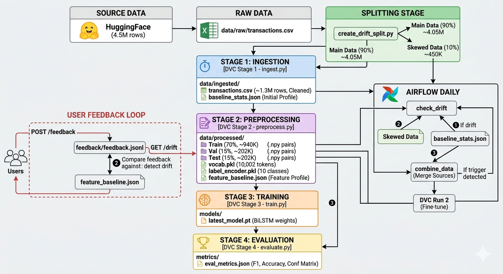
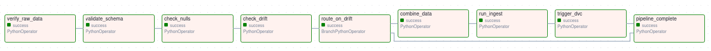
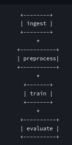
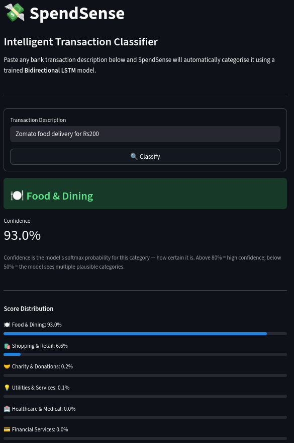
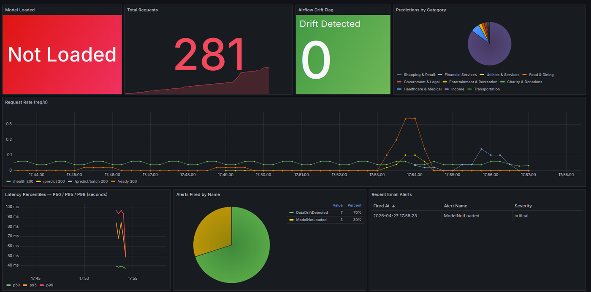
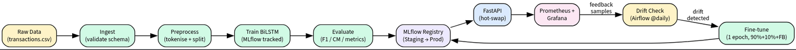
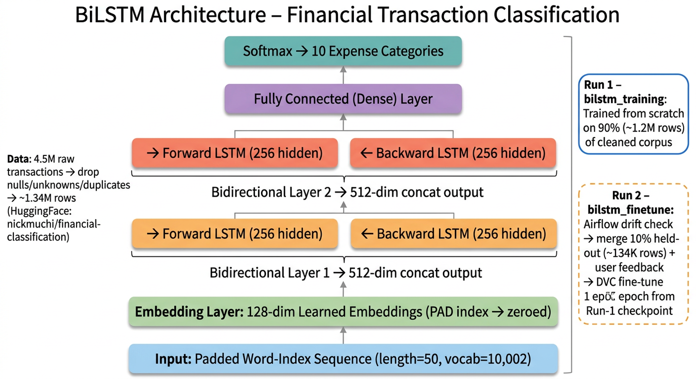
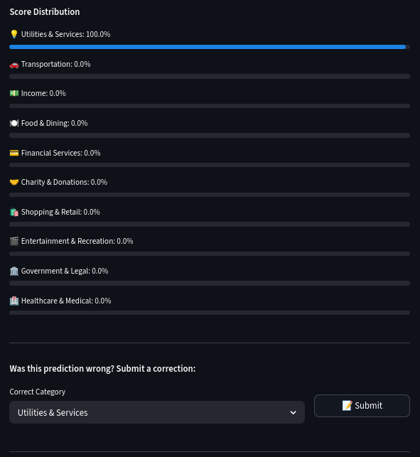
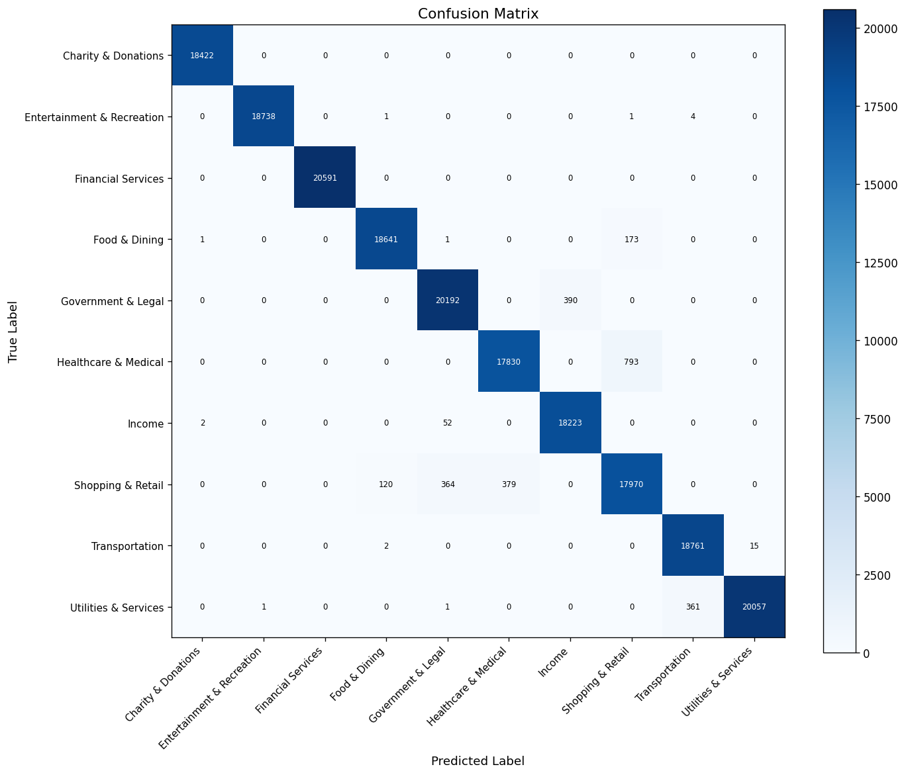

SpendSense reads a bank transaction description (e.g. UPI-ZEPTO-ZEPTOONLINE@YBL-YESB0YBLUPI-606266723117-UPI) and automatically classifies it into one of 10 spending categories like Food & Dining, Transportation, Shopping, etc. In this case, the transaction would be classified as Food & Dining.
It is built with a full MLOps stack so the model can retrain itself when data patterns change.
The model is trained on the nickmuchi/financial-classification dataset from HuggingFace — real bank transaction narrations labelled across 10 spending categories.

The diagram above traces the full journey of data through the system. Raw transaction data (4.5M rows) from HuggingFace is cleaned and deduplicated down to 1.34M rows. Before each CI run, this data is split 90/10: the 90% baseline undergoes a 70/15/15 train/validation/test split, gets tokenised and encoded into fixed-length sequences, and trains the BiLSTM. The 10% slice is intentionally skewed to simulate drift. When Airflow detects a distribution shift, all three sources — baseline, drift slice, and user feedback corrections — are merged and passed back through the pipeline for retraining.
The raw download contains ~4.5 million rows but is heavily duplicated. After removing nulls, filtering to the 10 valid categories, and deduplicating identical (description, category) pairs, 1,343,517 clean rows remain.
| Stage | Rows |
|---|---|
| Raw download | ~4,500,000 |
| After cleanup (null removal + category filter + deduplication) | 1,343,517 |
| Eliminated | ~3,156,483 (~70%) |
The cleaned dataset is well-balanced — each category has between 130K and 138K rows:
| Category | Count | Example Transactions |
|---|---|---|
| Financial Services | 138,454 | Credit card payment, SIP, LIC premium |
| Government & Legal | 138,401 | Tax payment, passport fees, court fees |
| Utilities & Services | 137,366 | BESCOM bill, Jio recharge, internet |
| Shopping & Retail | 134,008 | Amazon, Flipkart, Myntra |
| Food & Dining | 133,932 | Zomato, Swiggy, restaurant bill |
| Transportation | 133,799 | Uber, Ola, petrol pump |
| Entertainment & Recreation | 133,570 | Netflix, BookMyShow, gaming |
| Healthcare & Medical | 132,582 | Apollo pharmacy, lab tests |
| Charity & Donations | 131,232 | NGO donation, temple donation |
| Income | 130,173 | Salary, freelance payment, refund |
Average transaction description length: 25.3 characters.
Before each CI run, the full raw dataset is split into a 90% baseline file (stratified, used for Run 1 training) and a 10% drift file (intentionally skewed — the top 3 categories are oversampled to 75% of the slice). This skew guarantees a >10 percentage-point distribution shift, which triggers the Airflow drift alert on every CI run and exercises the full retraining loop.
The 90% baseline data is split into three sets (stratified to preserve category proportions):
| Split | Fraction | Approx. Rows |
|---|---|---|
| Train | 70% | ~940,000 |
| Validation | 15% | ~202,000 |
| Test | 15% | ~202,000 |
Each description is lowercased, punctuation-stripped, and tokenised into words. A vocabulary of 10,000 words (plus <PAD> and <UNK>) is built from the training set only. Every description is then encoded as a fixed-length sequence of 50 integer tokens — shorter descriptions are padded, longer ones are truncated. Most transaction narrations are 3–5 meaningful words, so the 50-token limit covers over 99% of inputs.
When drift is detected, Airflow combines three data sources into a single training file: the 90% baseline (~4.05M rows), the 10% drift slice (~450K rows), and any user-submitted feedback corrections. The merged file (~4.5M rows total) is then passed through the full DVC pipeline as DVC Run 2, which fine-tunes the Run 1 model for 1 epoch rather than retraining from scratch.
Every time code is pushed to main, GitHub Actions runs three jobs automatically:
main branch only.Everything runs on a local GPU machine — no cloud services are used.
Airflow runs a pipeline every day to check if new transaction data looks different from what the model was trained on (called "data drift").
9-step pipeline:

If drift is detected (>10 percentage-point shift in category distribution), it merges new data with the original training set and triggers retraining using the previous model as a starting point (warm start/fine-tuning).
DVC manages the four-stage ML pipeline and ensures every run is reproducible.

4 stages: ingest → preprocess → train → evaluate
params.yaml.dvc.lock records a hash of every input and output — so you can always recreate any past result exactly.dvc repro, saving time.ingest loads raw transactions, preprocess splits 70/15/15, train fits the BiLSTM from scratch, evaluate scores the held-out test split.FINETUNE_MODEL_PATH pointing to the Run 1 model — only 1 epoch of weight updates on the enlarged dataset instead of training from scratch.MLflow acts as a logbook for every training run.
Staging stage in the model registry.mlruns/ folder.Eight containers run the full system: mlflow, backend, frontend, airflow, prometheus, grafana, alertmanager, pushgateway.
The backend loads the trained model on startup and serves predictions via REST API.
| Endpoint | What it does |
|---|---|
POST /predict | Classify a single transaction description |
POST /predict/batch | Classify many descriptions at once |
POST /feedback | Submit a correction (actual vs predicted category) |
GET /drift | Check if recent feedback shows distribution shift |
GET /models | List all past training runs |
POST /models/switch | Hot-swap to a different model version (no restart) |
GET /health / GET /ready | Health checks |
GET /metrics | Prometheus metrics endpoint |

Three pages accessible in the browser:

| Tool | Port | Purpose |
|---|---|---|
| Prometheus | 9090 | Scrapes metrics from backend every 10s |
| Pushgateway | 9091 | Receives metrics from batch jobs (training, Airflow, etc.) |
| Grafana | 3001 | 8-panel dashboard (latency, request rate, drift flag, alerts) |
| Alertmanager | 9093 | Fires email alerts for 11 rules (e.g. high error rate, drift detected) |
All 5 system components (backend, training, evaluation, Airflow, frontend) push or expose metrics. Alerts are sent via Gmail SMTP and resolve automatically once the triggering condition clears.
User │ ▼ Streamlit Frontend (port 8501) │ REST API calls via BACKEND_URL ▼ FastAPI Backend (port 8000) │ loads artefacts from disk on startup ▼ BiLSTM Model + Vocab + LabelEncoder │ ├── Prometheus /metrics → Prometheus (9090) → Grafana (3001) ├── Pushgateway (9091) ← training, evaluation, Airflow, Streamlit ├── Alertmanager (9093) → email alerts ├── MLflow tracking → MLflow server (5000) └── Data pipeline ← Airflow (8080) + DVC + GitHub Actions
/feedback → logged to feedback.jsonl → system detects if feedback shows >10 percentage-point category shift → if detected, triggers retraining on combined original + feedback data.
The diagram above shows the end-to-end system at a glance. GitHub Actions sits at the top and orchestrates everything — it triggers the ML pipeline via DVC and manages the infrastructure lifecycle. DVC runs the four-stage data-to-model pipeline: raw data is cleaned, split, tokenised, and used to train a BiLSTM. The trained model is logged in MLflow and served through a FastAPI backend, which the Streamlit frontend calls for predictions. Airflow runs daily to check whether new data has drifted from the training distribution and fires a retraining run when it has. Prometheus and Grafana monitor all services in real time, with Alertmanager sending email alerts when something goes wrong.

nickmuchi/financial-classification; ~1.34M rows remain after dropping nulls, unknown categories, and duplicatesbilstm_trainingbilstm_finetune
Every push to main triggers a 3-job automated pipeline that takes ~13 minutes end to end.
Job 1 (~30s) — runs on every branch: Checks code style with flake8 and runs all 68 unit tests. Fails if code coverage drops below 60%.
Job 2 (~11.5 min) — main branch only: This is the full ML pipeline. First, the 1.34M cleaned rows are split 90/10 — the 10% is the drift batch. Docker infrastructure services (MLflow, Prometheus, Grafana, Alertmanager, Pushgateway) are started. DVC Run 1 trains the model on the 90% data and must pass an F1 ≥ 0.70 gate. Then Airflow is triggered: it validates the 10% drift batch, detects the distribution shift, and merges it with the 90% data plus any collected user feedback. DVC Run 2 fine-tunes the model (from Run 1 checkpoint) on this combined dataset for 1 epoch. Trained artifacts are saved locally for Job 3.
Job 3 (~1 min) — main branch only: Picks up the saved artifacts, starts the backend and frontend inside Docker, and smoke-tests all API endpoints to confirm the full system is working end to end.

When the model misclassifies a transaction, the user can correct it directly from the frontend. Each correction is saved and accumulates over time. The system periodically checks whether the corrections reveal a pattern — specifically, if any spending category has shifted by more than 10 percentage points from the original distribution. When such a shift is detected, the model is automatically retrained on the combined original data plus all collected corrections, so it adapts to real user behaviour without any manual intervention.
| Criterion | Threshold | Status |
|---|---|---|
| Test macro F1-score | ≥ 0.70 | Achieved: 98.72% |
| Test accuracy | ≥ 0.70 | Achieved: 98.75% |
| API latency (p95) | < 200ms | Verified via Prometheus histogram |
| Unit test suite | All tests pass (0 failures) | 68/68 pass |
| Code coverage | ≥ 60% (CI gate) | ~70% observed; CI gate enforced with --cov-fail-under=60 |
| Error rate in production | < 5% | Alertmanager HighErrorRate alert fires at > 5% |
| Category | Total | Passed | Failed |
|---|---|---|---|
| Unit tests (pytest, 5 files) | 68 | 68 | 0 |
| Integration tests (S1–S8) | 8 | 8 | 0 |
| Total | 76 | 76 | 0 |
Metrics are evaluated on the held-out 15% test split of ~1.34M cleaned rows.
| Metric | Value |
|---|---|
| Test Macro F1 | 98.69% |
| Test Weighted F1 | 98.69% |
| Test Accuracy | 98.69% |
| Category | F1 Score | Accuracy | Notes |
|---|---|---|---|
| Charity & Donations | 99.99% | 99.99% | Near-perfect — highly distinctive vocabulary |
| Entertainment & Recreation | 99.99% | 99.99% | Near-perfect |
| Financial Services | 99.99% | 99.99% | Near-perfect |
| Utilities & Services | 99.32% | 99.32% | Excellent |
| Food & Dining | 99.31% | 99.31% | Excellent |
| Transportation | 99.29% | 99.29% | Excellent |
| Income | 98.84% | 98.84% | Strong |
| Government & Legal | 97.78% | 97.78% | Minor overlap with Financial Services |
| Healthcare & Medical | 96.96% | 96.96% | Some confusion with Shopping & Retail |
| Shopping & Retail | 95.45% | 95.45% | Lowest — broadest category, overlaps with Entertainment |
Shopping & Retail scores the lowest (95.45%) because it is the broadest category — gym memberships, online pharmacies, and multi-category retailers share merchant names with both Entertainment & Recreation and Healthcare & Medical. Government & Legal and Financial Services show a narrow band of mutual confusion, primarily around fee-based transaction narrations.

The matrix shows strong diagonal dominance across all 10 classes. The only notable off-diagonal activity is between Shopping & Retail and Entertainment & Recreation, and between Healthcare & Medical and Shopping & Retail — categories that share merchant naming patterns such as gyms, online pharmacies, and general retail platforms.
Coverage from the latest CI run (pytest --cov=src --cov=backend --cov-fail-under=60):
| Module | Statements | Missed | Coverage |
|---|---|---|---|
backend/app/schemas.py | 36 | 0 | 100% |
src/models/model.py | 19 | 0 | 100% |
backend/app/monitoring.py | 18 | 1 | 94% |
src/data/preprocess.py | 88 | 6 | 93% |
src/data/ingest.py | 68 | 9 | 87% |
backend/app/main.py | 151 | 56 | 63% |
backend/app/predictor.py | 157 | 89 | 43% |
| TOTAL | 537 | 161 | 70% |
The CI gate is 60% and the build achieves 70%. predictor.py scores lowest (43%) — the MLflow download paths need a live server, so they are tested with mocks only. train.py and evaluate.py are excluded entirely because they need a full GPU pipeline run to execute meaningfully.
Airflow 2.9 only accepts session auth by default. CI's Basic Auth trigger was silently rejected. Fix: set AIRFLOW__API__AUTH_BACKENDS=basic_auth,session and DAGS_ARE_PAUSED_AT_CREATION=False on the Airflow service — without the second, freshly registered DAGs start paused and runs stay queued forever.
Airflow tasks push metrics one by one. The last task was unknowingly overwriting the drift metric set by an earlier task, so the alert never saw it. The issue was that push_to_gateway replaces everything on each push. Switching to pushadd_to_gateway fixes it — each push only updates its own metrics and leaves the rest untouched.
Airflow runs as a different system user than DVC. When Airflow tried to overwrite files written by DVC, it was blocked. The fix is to delete the folder entirely and recreate it fresh before writing — since the folder itself is open to all users, this sidesteps the permission issue.
GitHub's upload/download artifact API added 40+ seconds for the ~30 MB model payload. Fix: since the runner is self-hosted (same machine), stage files to $HOME/ss-ci-$GITHUB_RUN_ID/ and copy with cp instead. ($RUNNER_TEMP is wiped between jobs — $HOME persists.)
Example buttons on the Home page sometimes didn't pre-fill the input. session_state.pop() was clearing the value before the form re-rendered. Fix: read with session_state.get() and only call pop() inside if submitted: — so the value persists through the button-click rerun.
Prometheus pulls metrics from a live /metrics endpoint. Long-running services like the FastAPI backend expose one natively. But batch jobs — DVC training, evaluation, Airflow tasks — exit after a few minutes, long before Prometheus next scrapes. Pushgateway acts as a persistent store: jobs push metrics to it on completion, and Prometheus scrapes the gateway. This is the standard pattern for monitoring batch ML pipelines.
MLflow's built-in server (mlflow models serve) exposes a single fixed /invocations endpoint. It provides no control over response shape, Prometheus metrics, feedback collection, drift detection, model hot-swap, or health probes. FastAPI gives full control over all 9 endpoints. MLflow is still used for what it does best — experiment tracking and the model registry. The POST /models/switch endpoint satisfies "MLflow APIification" by downloading and hot-swapping any MLflow run's model without a container restart.
GitHub Actions triggers automatically on push with no external webhook setup. Its self-hosted runner flag lets the same YAML run on a local GPU machine, avoiding cloud costs while keeping full CI capability. The needs: dependency key enforces strict job ordering — Job 3 never runs unless Job 2 passes. Secrets (ALERTMANAGER_SMTP_PASSWORD, GITHUB_PAT) are stored in GitHub's secrets vault and injected at runtime, never hardcoded.
Without CI, quality checks are manual and routinely skipped under time pressure. Three automated gates enforce correctness on every push:
test_f1_macro < 0.70 fails the build — the broken model never reaches the app.Transaction descriptions are short (typically 3–8 tokens after prefix stripping) and do not require long-range attention. BiLSTM captures bidirectional context efficiently at far lower parameter count and inference cost. Transformers would require a pretrained model (BERT/DistilBERT) and GPU memory at inference time — both are constraints on a local on-prem deployment. The 98.69% macro F1 shows BiLSTM is more than sufficient for this task.
DVC tracks input/output MD5 hashes for every stage. If the data and code haven't changed, it skips the stage — this makes dvc repro idempotent and fast. Each stage's outputs are cached and versioned alongside the Git commit, so any prior pipeline state is reproducible with git checkout <sha> && dvc checkout. Plain shell scripts provide none of this: they re-run everything every time and have no version linkage to data or models.
Run 1 trains a baseline model on the 90% data slice — it needs to converge from scratch. The 10% drift batch exists specifically to simulate newly arrived data that was not seen during initial training. Running Airflow between the two runs demonstrates the full production loop: drift detection → data merge → fine-tuning. If both runs used the same data, there would be no meaningful difference to show, and the retraining trigger would be synthetic rather than data-driven.
DVC manages the ML pipeline (training, evaluation, versioning). Airflow manages the data pipeline — the daily scheduled work of fetching new data, validating it, checking for drift, and deciding whether to trigger retraining. These are fundamentally different concerns: DVC is content-addressed and reproducible; Airflow is time-driven and event-driven. Combining both means the ML pipeline is reproducible and the data pipeline is observable, schedulable, and auditable.
Strict container separation means each service can be restarted, upgraded, or replaced independently. The backend container can be rebuilt with a new model without touching Prometheus or Grafana. Airflow can be wiped and rebuilt (clearing its DB) without affecting the MLflow run history. This also mirrors production patterns where services scale independently and have separate lifecycle management.